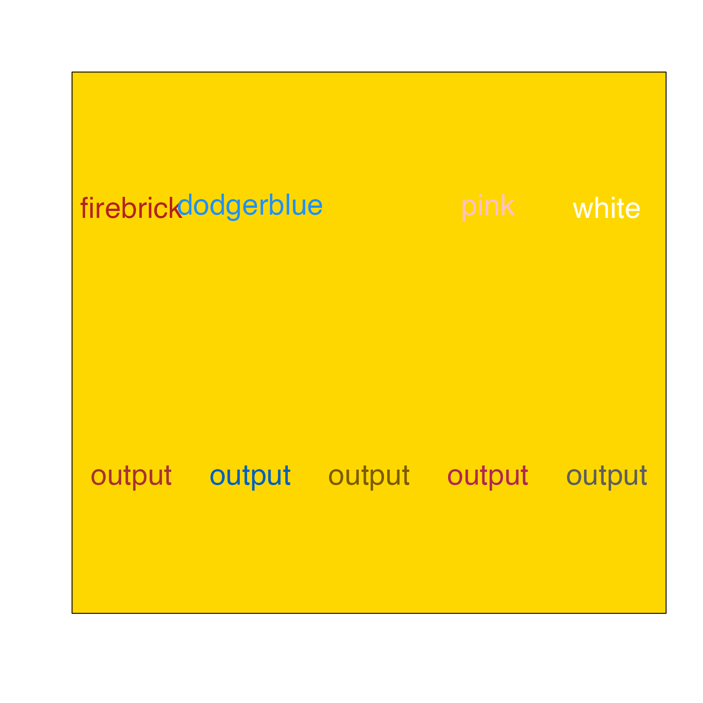
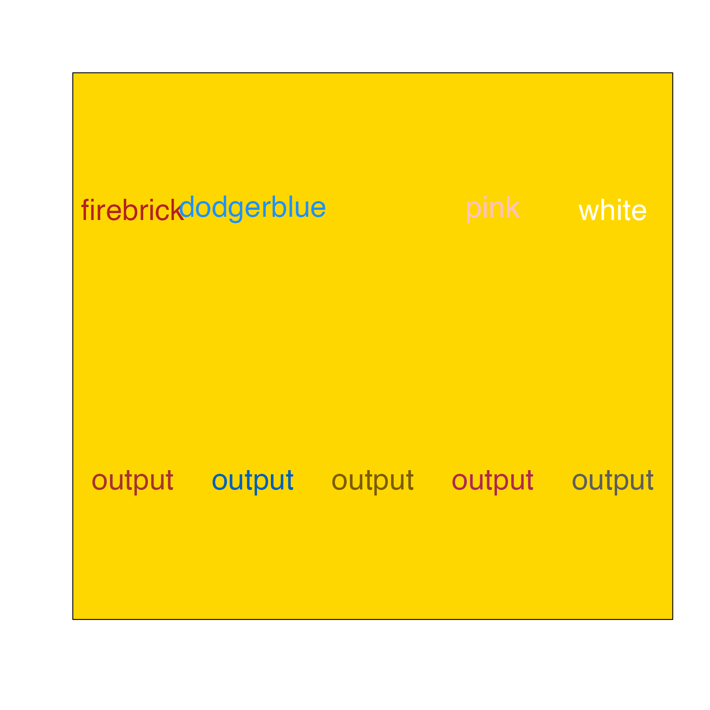

Make color contrast
Usage
make_color_contrast(
x,
y = NULL,
bg = "white",
L_threshold = 65,
C_floor = 90,
L_hi = 95,
L_lo = 40,
blend_preset = "ryb",
do_plot = FALSE,
cex = 2,
...
)Arguments
- blend_preset
characterstring passed aspresettocolorjam::blend_colors()to define the color wheel used during color blending operations.
Details
This function provides a simple method to ensure a color has adequate visual contrast with a background color, while retaining some color saturation. For example, red on red background will return something close to pink, so the pink retains the red color saturation but is visually distinct from the background color red.
Similarly, pink on pink will return something close to red.
See also
Other venndir internal:
assemble_venndir_label(),
expand_range(),
get_venn_polygon_shapes(),
make_venn_combn_df(),
match_list(),
print_color_df(),
shrink_df(),
simple_ellipse(),
venndir_to_df()
Examples
x <- c("firebrick", "dodgerblue", "gold", "pink", "white");
y <- rep("red3", 4);
make_color_contrast(x, y, do_plot=TRUE);
 #> [1] "#FFCDCD" "#BDF1FF" "#FFEE64" "#FFC8E4" "#FFFFFF"
y <- rep("pink1", 4);
make_color_contrast(x, y, do_plot=TRUE);
#> [1] "#A73232" "#005FBF" "#7B5C00" "#AF2851" "#5E5E5E"
y <- rep("gold", 4);
make_color_contrast(x, y, do_plot=TRUE);

#> [1] "#A73232" "#005FBF" "#7B5C00" "#AF2851" "#5E5E5E"
y <- c("red4", "aquamarine4", "blue3", "yellow", "pink2")
make_color_contrast(x, y, do_plot=TRUE, C_floor=140);
#> [1] "#FFCDCD" "#BDF1FF" "#FFEE64" "#FFC8E4" "#FFFFFF"
y <- rep("pink1", 4);
make_color_contrast(x, y, do_plot=TRUE);
#> [1] "#A73232" "#005FBF" "#7B5C00" "#AF2851" "#5E5E5E"
y <- rep("gold", 4);
make_color_contrast(x, y, do_plot=TRUE);

#> [1] "#A73232" "#005FBF" "#7B5C00" "#AF2851" "#5E5E5E"
y <- c("red4", "aquamarine4", "blue3", "yellow", "pink2")
make_color_contrast(x, y, do_plot=TRUE, C_floor=140);
 #> [1] "#FFB6B6" "#87F2FF" "#FFED00" "#CC0048" "#5E5E5E"
#> [1] "#FFB6B6" "#87F2FF" "#FFED00" "#CC0048" "#5E5E5E"